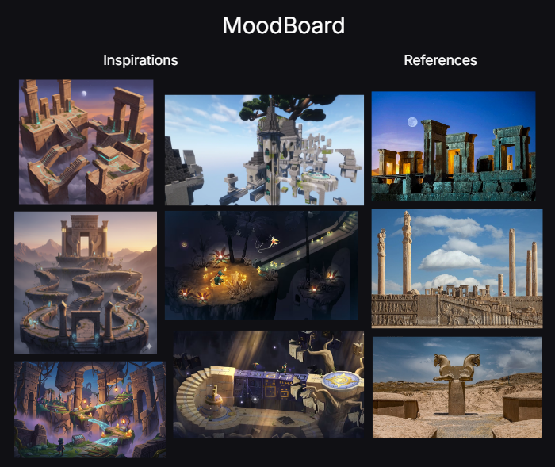

Ashes to Dawn
Trailer
Player Experience Goal
The goal of Ashes to Dawn was to design a level that teaches its interaction language through environment rather than UI prompts. Player guidance is communicated through spatial flow, lighting cues, landmarks, and interaction feedback.
Environmental UX Direction
The visual direction draws inspiration from the architecture of Persepolis and themes of monumentality, ritual spaces, and ruins. These references informed the scale, landmarks, and spatial rhythm of the environment to support player orientation and movement.
The narrative concept of rediscovering what has been lost is reflected in the interactions, where players gradually activate elements of the environment and progress through exploration.

Player Onboarding and Environmental Guidance

Onboarding Tier Breakdown

Environment Iteration: Ruins as Gameplay
In Tier 3, the columns were redesigned from intact architectural elements into broken ruins that actively support gameplay. By fragmenting and lowering them, the columns became traversal platforms the player must jump across to reach a collectible key. This change transformed the ruins from purely visual background elements into functional level design, reinforcing the idea that the environment itself guides progression and interaction.